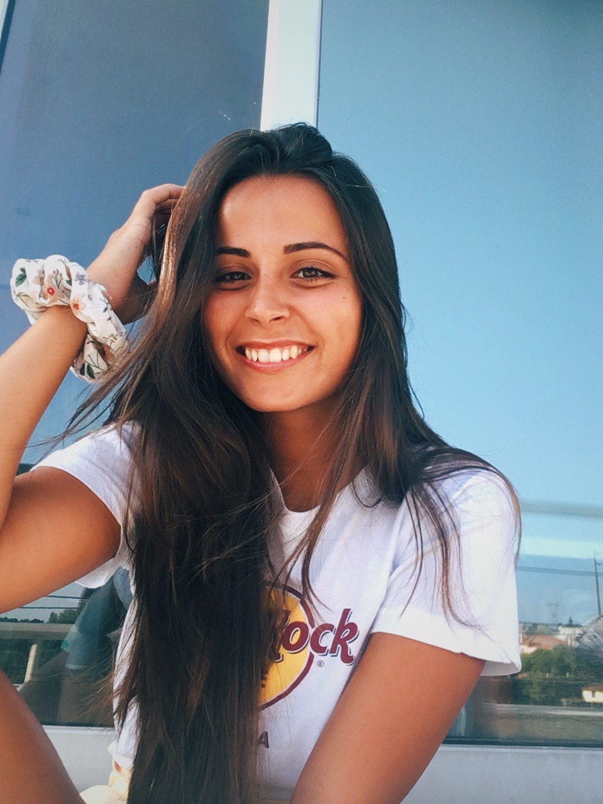
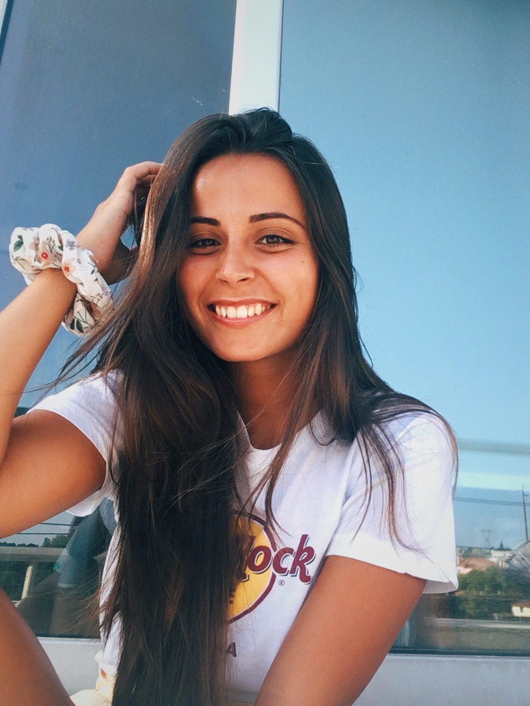
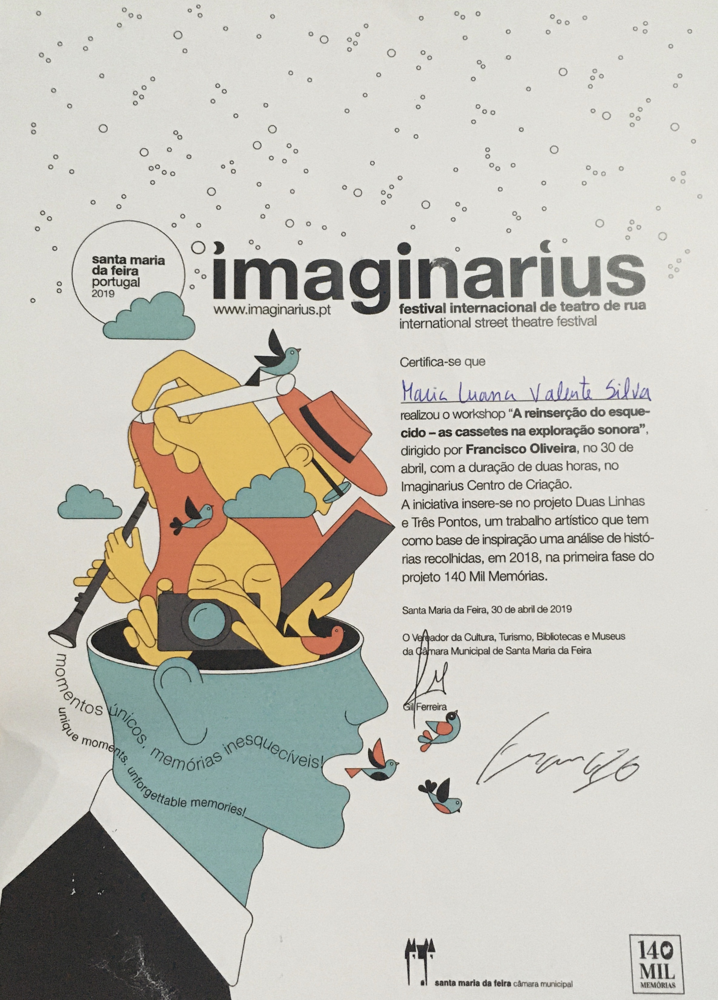
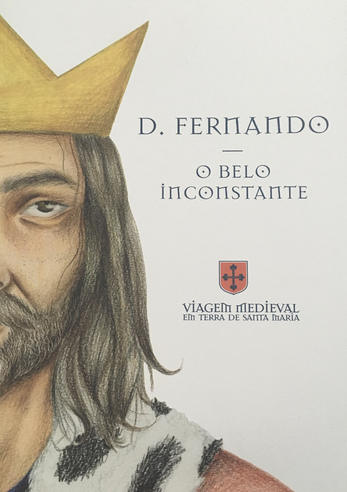

Olá, eu sou a Luana, tenho 21 anos e nasci no dia 4 de janeiro de 2000. Sou natural de Ovar e Santa Maria da feira.
Desde cedo que tive sempre uma grande paixão pela arte, o design e a arquitetura, por isso, segui este caminho que me trouxe ao curso de Design na Universidade de Aveiro. No entanto, antes de encontrar este “amor”, tive de passar por outros caminhos que desenvolveram a minha coragem, autonomia e confiança. Ao finalizar o 9º ano escolhi o curso de Ciências e Tecnologias, não por ser algo que goste, mas não queria mudar de escola e deixar os meus amigos, então decidi experimentar este curso. Porém, entendi que este acesso não era o melhor para a minha felicidade…
E como a nossa felicidade está em primeiro lugar, optei pelo curso de Artes no ano seguinte, que sempre foi uma grande atração, e depois disso entrei em Aveiro, que atualmente estou a frequentar.
Ao longo do tempo aprendi muitas coisas e estou muita grata por tudo o que passei, são estes momentos que fortalecem a minha pessoa.
 

Design de comunicação; Design de produto; Vídeo; Fotografia; Tipografia; Design Gráfico; Realização de retratos a carvão;
Curso de Inglês pela escola Brigton Language College (2016);
Participação no Concurso de Ilustração para o Cartaz da Feira de Artes Perfomativas da Câmara Municipal de Santa Maria da Feira (2018);
Presença no Workshop “A reinserção do esquecido – as cassetes na exploração sonora” (2018);
Colaboração na Ilustração da Banda Desenhada da Viagem Medieval da Câmara Municipal de Santa Maria da Feira (2019);
Promotora do Ginásio Physical em Santa Maria da Feira (2019);
Elaboração de uma maquete para a Escola de Samba Charanguinha (2020);
Participação no concurso para o Logotipo ExpoDubai2020 (2021);
Colaboração na Scientific Junior Value da Universidade de Aveiro como membro de Comunicação e Imagem;
 